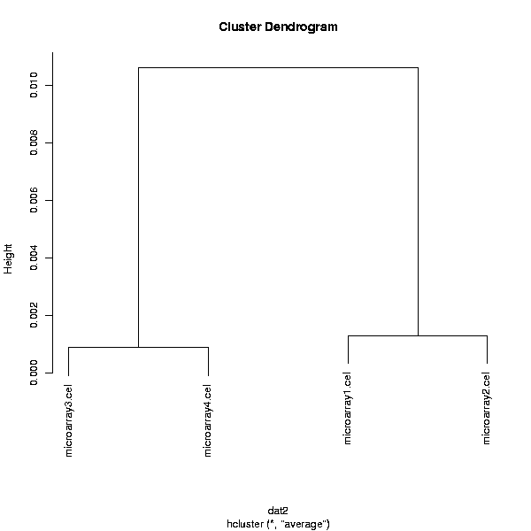

Visualizes the grouping of samples or genes as a dendrogram.
Either genes or chips can be clustered. A grouping to color next to the clustered objects can be specified using the group column selection. The tool also automatically splits the tree into a specified number of groups, and visualizes the dendrogram leading to these groups with different colors.
Objects are clustered using their Pearson correlations and the dendrogram is constructed using the average linkage method. Please note that the clustering is applied to max 20 000 genes/samples.
The black-and-white image visualizes the clustering of the genes or chips. The colored image contains some outside information. On the bottom of the image, the groups-box labels the samples with colors according to their assignment to groups in the phenodata group column.
One color and one black-and-white clustering image:
